Agentic Video Auto-Encoder
A self-evolving auto-encoding formulation for learning agent-native video representations through reconstruction.
1 Qwen Business Unit of Alibaba · 2 ShanghaiTech University
3 The Hong Kong University of Science and Technology · 4 Institute of Computing Technology · 5 Southeast University
* Co-corresponding authors · jmliu1217@gmail.com · renkan@shanghaitech.edu.cn
Film space → agent space. Through self-evolving agentic video auto-encoding, AVA-Encoder autonomously learns to map tightly coupled multimodal films into agent-readable, agent-operable, and cinematically faithful Film Knowledge Graph representations.
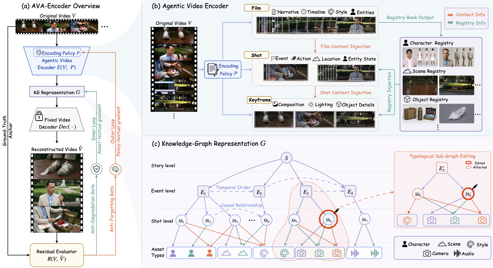
Abstract
Creative agents still lack an effective way to learn from high-quality human films, limiting their ability to produce cinematic-grade videos. A key challenge is the absence of a structured video representation that is both faithful to film content and directly usable for agentic reasoning and manipulation. To address the challenge, we propose the Agentic Video Auto-Encoder (AVA-Encoder), a framework for learning agent-native video representations via agentic auto-encoding.
AVA-Encoder transforms a video into a knowledge graph (KG) representation and then reconstructs it back into video. This KG representation explicitly captures entities, events, assets, and their multimodal relationships in a structured form that can be easily understood, queried, and manipulated by agents. The video reconstruction differences drive a textual-gradient optimization framework that jointly improves the KG representation quality and the agentic encoder.
Extensive experiments demonstrate that AVA-Encoder significantly outperforms human-tuned baseline systems, achieving an absolute improvement of 20.7 percentage points over the strongest baseline and surpassing extensively human-engineered system prompts while utilizing 3.9 times fewer system tokens. We release the complete AVA-Encoder framework, a reliable agentic video reconstruction benchmark, and the first dataset of high-quality film KG representations.
Contributions
A self-evolving auto-encoding formulation for learning agent-native video representations through reconstruction.
Four evaluation directions and eight film dimensions for measuring representational faithfulness.
Text-based Film KG representations and graph-topology editing for generation trajectories, remixing, and reuse.
Method
Given an input film \(V\), the Agentic Video Encoder \(E\), governed by the complete policy \(P=(P_{\mathrm{film}},P_{\mathrm{shot}},P_{\mathrm{kf}})\), produces a Film KG \(G\). A fixed text-to-image and image-to-video decoder then reconstructs \(\hat V\):
With \(\mathrm{Dec}\) fixed, reconstruction quality measures how much film information is preserved in \(G\). Reconstruction errors provide grounded evidence for improving the shared encoding policy and the input-specific representation at separate stages.
Film-, shot-, and keyframe-level understanding maps dense multimodal video into structured text, with each finer level receiving context from the preceding level.
Typed relations preserve hierarchy, temporal order, asset references, and cross-shot dependencies after different modalities and semantic levels have been separated.
Data-Independent Encoding Policy Pseudo-Training improves the shared shot-level policy; optional Data-Dependent KG Representation Refinement later improves only the current input's KG.
The loop-facing \(R_{\mathrm{reward}}\) supports diagnosis and candidate acceptance, while the separate \(R_{\mathrm{eval}}\) provides common final evaluation across systems.
Component 1
Coarse-to-Fine Video Understanding
The Agentic Video Encoder first captures the global film context, then analyzes each shot with that context, and finally describes keyframe details with the corresponding shot context. This ordered injection reduces information loss when tightly coupled video content is mapped into structured text.
Here \(s_i\) is shot \(i\), \(f_i^*\) is its selected keyframe, and \(\mathcal C_{\mathrm{film}}\), \(\mathcal C_{\mathrm{shot},i}\), and \(\mathcal C_{\mathrm{kf},i}\) are the film-, shot-, and keyframe-level contexts. The complete policy is \(P=(P_{\mathrm{film}},P_{\mathrm{shot}},P_{\mathrm{kf}})\).
Component 2
Text-Centered Structure with a Linked Multimodal Asset Layer
The Story–Event–Shot hierarchy and its Character, Scene, Object, Style, Camera, and Audio states store structured text only. Generated keyframes, reference images, audio, and rendered shots are kept in a linked asset layer. Typed edges preserve production, temporal, and semantic dependencies.
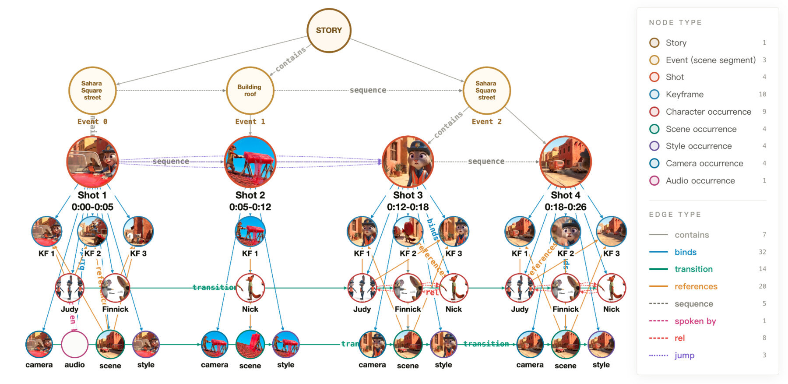
Component 3
Stage-Separated Optimization of Policy and Representation
The stages update different objects at different times and are not nested. First, the outer loop learns the shared shot-level policy before deployment. After the complete policy is frozen, the inner loop may optionally refine the current video's KG at test time. All foundation-model weights remain fixed, and \(P\) and \(G\) are never updated simultaneously.
Stage 1 · before deployment
Data-Independent Encoding Policy Pseudo-Training
When: before deployment · Updates: shared \(P_{\mathrm{shot}}\) · Freezes: \(P_{\mathrm{film}}\), \(P_{\mathrm{kf}}\), and all model weights
The Outer Loop learns one reusable shot-level encoding policy from a stream of \(L\) videos---six in the reported pseudo-training setup. The resulting policy is shared by later, unseen video inputs.
Stage 2 · optional at test time
Data-Dependent KG Representation Refinement
When: optional at test time · Updates: current video's \(G\) · Freezes: complete policy \(P^*\) and all model weights
The Inner Loop refines only the Film KG of the current input. Here \(\beta\in\{\mathrm{KF},\mathrm{shot}\}\) selects keyframe or video-shot refinement.
Stage 1 · before deployment
Data-Independent Encoding Policy Pseudo-Training
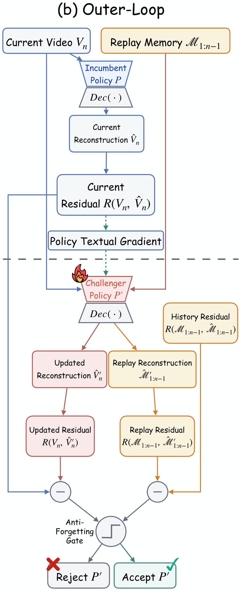
Stage 2 · optional at test time
Data-Dependent KG Representation Refinement
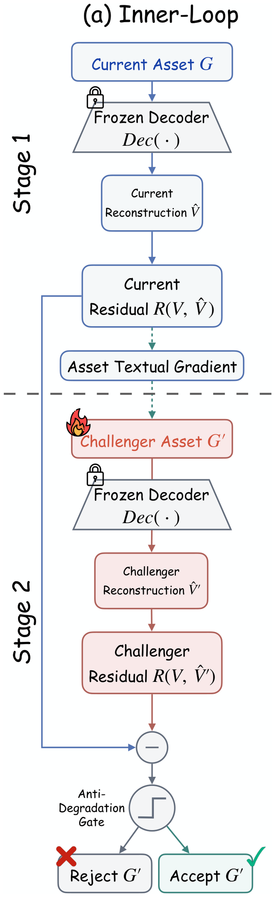
In the dual-loop schematics above, \(R(\cdot,\cdot)\) denotes reconstruction-derived loop feedback. The paper's formal optimization notation is \(R_{\mathrm{reward}}\); the separate final reporting protocol \(R_{\mathrm{eval}}\) is not used to optimize either loop.
Component 4
One signal for optimization, one protocol for reporting
A complex image or video is difficult to judge with one direct score. AVA-Encoder therefore decomposes each selected keyframe or shot into approximately 30 atomic factual questions. Their answers provide precise reconstruction feedback for optimization, while a separate common protocol provides final comparison across representation systems.
Loop optimization · \(R_{\mathrm{reward}}\)
For shot \(s\) in video \(n\), \(\chi_{n,s,k}=1\) when reconstruction preserves atomic fact \(k\). This fact-level signal diagnoses errors and verifies candidate updates in both loops.
Final reporting · \(R_{\mathrm{eval}}\)
Here \(r_d^{\mathrm{eval}}\) is the normalized residual for applicable film dimension \(d\), and \(\sum_d\omega_d^{\mathrm{eval}}=1\). This protocol reports V, KF, V-BC, KF-BC, and Overall; it does not optimize either loop.
Quantitative · RQ1
Final evaluation uses direct Video comparison (V), direct Keyframe comparison (KF), Video Back-Captioning (V-BC), and Keyframe Back-Captioning (KF-BC). Overall is their unweighted mean.
| Method | V ↑ | KF ↑ | V-BC ↑ | KF-BC ↑ | Overall ↑ |
|---|---|---|---|---|---|
| VideoAnalyzer | 26.1 | 28.5 | 9.7 | 21.7 | 21.5 |
| Storyboard Studio | 16.4 | 28.6 | 9.6 | 23.0 | 19.4 |
| soap2soap | 36.7 | 39.5 | 15.8 | 21.3 | 28.3 |
| AVA-Encoder | 57.8 | 73.7 | 29.7 | 34.6 | 49.0 |
Main reconstruction results (%). AVA-Encoder improves Overall reconstruction by 20.7 percentage points over the strongest external baseline.
Both optimization stages versus removing both stages, equivalent to 15.6% relative improvement.
Pseudo-trained versus human-tuned policy under the controlled policy-only comparison.
Automatic rankings agree with two mutually blinded expert annotators on 97.3% of comparison triples.
The controlled ordering separates the two stages: (49.0) with both stages, (45.8) with policy pseudo-training only, (45.4) with KG refinement only, and (42.4) with neither. Each stage improves reconstruction on its own, and their combination performs best.
Policy evolution
45.8 > 44.4The pseudo-trained policy exceeds the human-tuned policy with the Inner Loop disabled in both conditions, while reducing system-prompt tokens from 31,336 to 8,052.
Acceptance gates
49.0 > 43.5The complete gated system improves Overall by 5.5 points over removing both acceptance gates.
| Ablation setting | V ↑ | KF ↑ | V-BC ↑ | KF-BC ↑ | Overall ↑ |
|---|---|---|---|---|---|
| Single-level understanding | 35.1 | 38.4 | 15.4 | 21.1 | 27.5 |
| Remove Data-Independent Encoding Policy Pseudo-Training | 52.7 | 71.8 | 23.9 | 33.1 | 45.4 |
| Remove Data-Dependent KG Representation Refinement | 55.6 | 68.3 | 26.6 | 32.7 | 45.8 |
| Remove both optimization loops | 50.7 | 67.6 | 21.2 | 29.9 | 42.4 |
| Human-tuned Agentic Video Encoder | 53.5 | 68.1 | 25.8 | 30.2 | 44.4 |
| Remove acceptance gates | 53.1 | 67.2 | 24.3 | 29.4 | 43.5 |
| AVA-Encoder (full) | 57.8 | 73.7 | 29.7 | 34.6 | 49.0 |
Reconstruction ablation results (%). The comparison directions are direct Video comparison (V), direct Keyframe comparison (KF), Video Back-Captioning (V-BC), and Keyframe Back-Captioning (KF-BC). Overall is their unweighted mean.
Qualitative reconstruction results
Each comparison uses the shared generation setting. Rows show GT, AVA-Encoder, soap2soap, VideoAnalyzer, Storyboard Studio, and the naive Agentic Video Encoder.
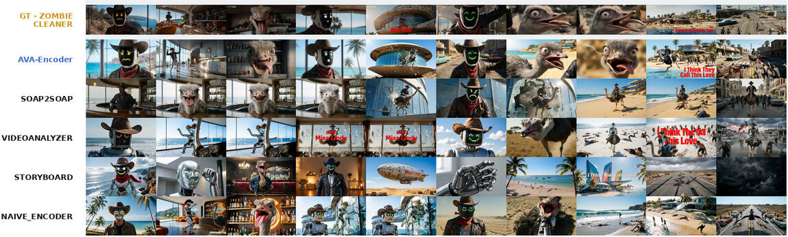
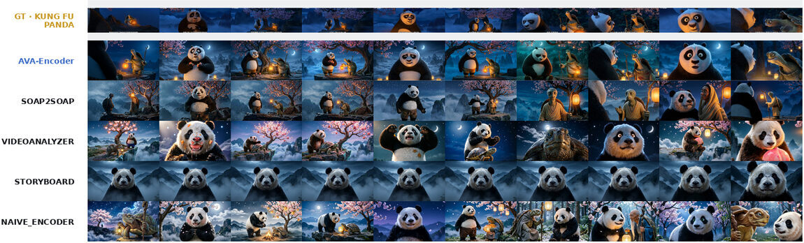
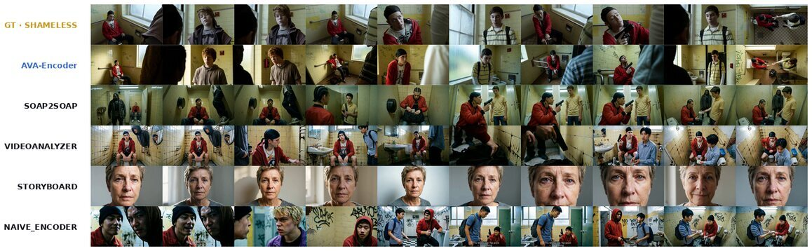
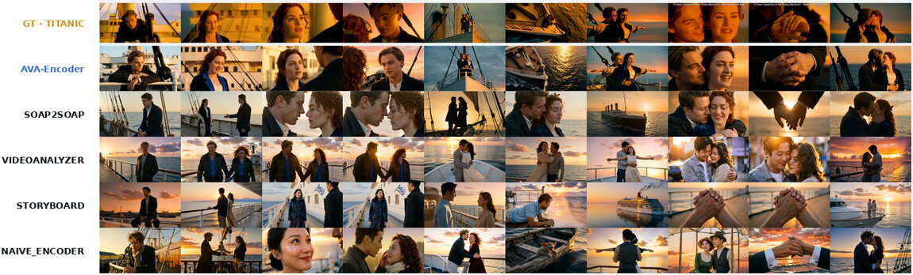
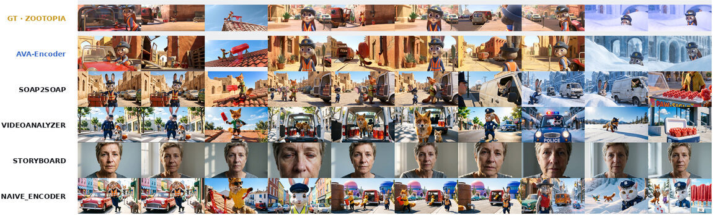
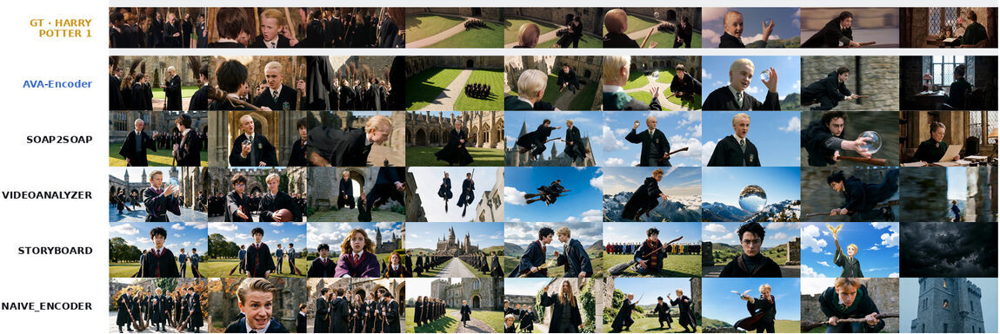
Select any reconstruction figure to inspect it at its original resolution.
KG operability · RQ3
A local graph edit follows typed dependencies to update affected character states, actions, dialogue, keyframes, and shots while preserving unrelated subgraphs. The examples show two identity-editing settings and one visual-treatment edit.
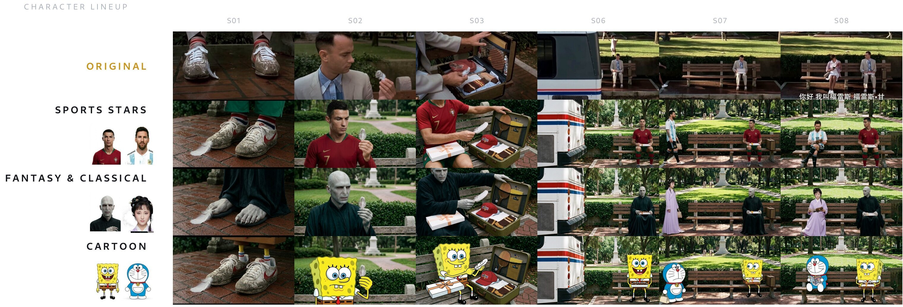
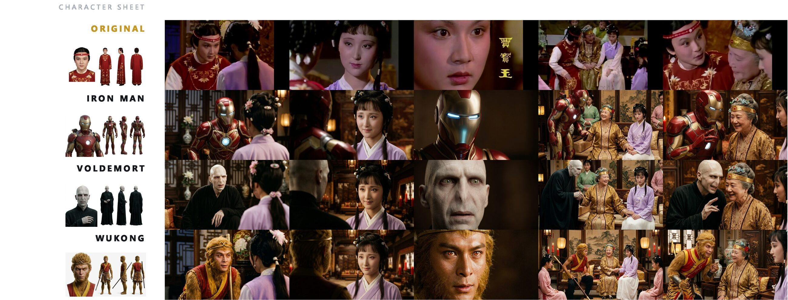
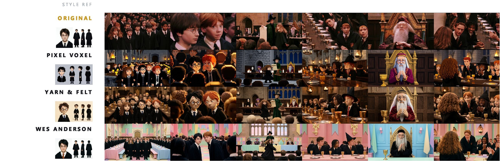
Downstream reuse · RQ4
We supply the complete AVA-Encoder representation once as text, with the same basic one-sentence request to refer to it for the current case. No framework-specific adapter or prompt tuning is used. Overall story-video quality improves for all four tested systems.
Downstream story-video quality (1–4). Values compare generation without the representation to generation with a single textual injection of the complete AVA-Encoder representation.
Film Knowledge Graph Dataset
The dataset contains fine-grained structured descriptions of scripts, events, characters, scenes, objects, shots, keyframes, camera language, visual style, and audio, together with their graph relations. The public release will contain structured text rather than source-film pixels or generated multimedia assets. Users may connect their own generation APIs, use the representations as agentic video creation trajectories, or perform graph-topology editing.
Release
We are preparing the AVA-Encoder implementation, reconstruction evaluation toolkit, complete system prompts, data documentation, Film Knowledge Graph Dataset, and graph-editing interface for public release in this repository.
Paper and citation
The public paper link will be added when available.
@misc{li2026avaencoder,
title = {AVA-Encoder: Towards Agent-Native Video Representation Learning},
author = {Chuyue Li and Jinpeng Yu and Haozhe Wang and Tian Xueyun and
Zhijing Zhang and Bingnan Li and Shuqi Gu and Kan Ren and
Jiaming Liu and Ruihua Huang},
year = {2026}
}